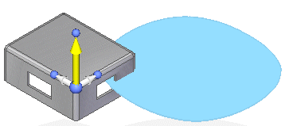
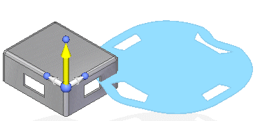

Blank Body command bar
Options
Displays the Blank Options dialog box.
Accuracy
Controls the accuracy of the computation of the blank. Specifying a finer accuracy increases the computation time.
Thickness
Specifies the thickness of the blank body.
Offset
Offsets the input faces into the model from blank computation. The offset value can be 0 to the material thickness.
Remove Loops
Removes interior loops from the selected faces.
When selected, the interior loops do not appear in the blank.

When deselected, the loops from the part model appear in the blank.

How do I
Create a blank bodyCreate a blank surface
Learn more
Creating blank featuresLook up more details
Blank Body commandBlank Options dialog box
Blank Surface command
Blank Surface command bar